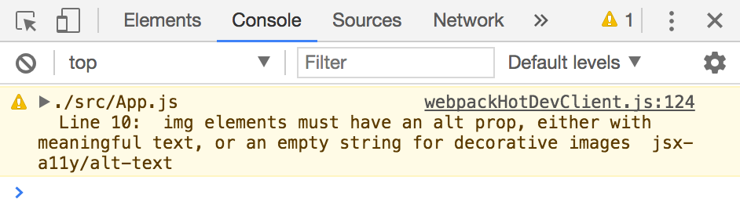
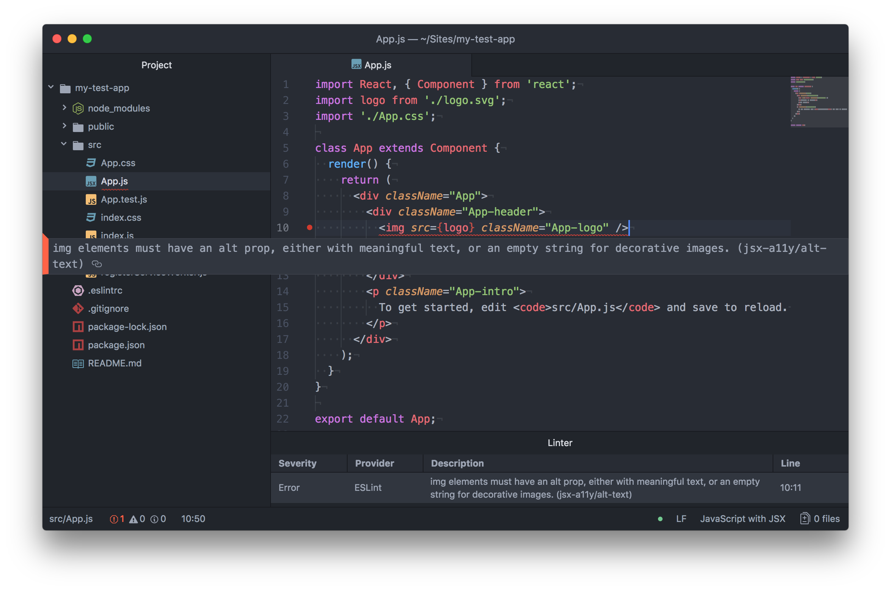

Creating Accessible React Apps
Can React apps be accessible? 🤔
Yes! 😄🙌🚀🍕
(Continue on to find out how.)
Agenda ✅
- A few notes on starting with React
- Setting the page
<title> - Live announcements
- Focus management
- React's accessibility linter
- Writing semantic HTML in React
- Demo! (time permitting)
A few notes on starting with React 📓
camelCase
Write attributes in camelCase 🐪
tabindex👉tabIndexcontenteditable👉contentEditablemaxlength👉maxLength
(aria-* and data-* are exempt from this.)
Reserved words
When HTML conflicts with JS 😕
for👉htmlForclass👉className
Self closing tags require /
What is this, XHTML? 🤷
<img src="…" alt="">👉<img src="…" alt="" /><meta charset="utf-8">👉<meta charset="utf-8" /><input type="text">👉<input type="text" />
Setting the page <title> 🗂
Why bother? 🤔
- Updates the browser tab
- SEO
- Often the first content announced by screen readers
Use document.title
componentDidMount() {
document.title = 'My page title';
}
- Not specific to React
- More on MDN
Other existing components
-
react-document-title
<DocumentTitle title='My page title'> <!-- content --> </DocumentTitle> -
react-helmet
<Helmet> <meta charSet='utf-8' /> <title>My page title</title> <link rel='stylesheet' href='css/page-specific.css' /> </Helmet>
Live announcements 📢
The Announcements component
import React from 'react';
class Announcements extends React.Component {
render() {
return (
<div aria-live="polite" aria-atomic="true" className="visuallyhidden">
{this.props.message}
</div>
);
}
}
export default Announcements;
Usage, part 1
Create a state property
this.state = {
message: null
};
Usage, part 2
Set the state property
this.setState({
message: 'Some message'
});
Usage, part 3
Send message to <Announcements /> component
<Announcements message={this.state.message} />
Other existing components
-
react-aria-live
<LiveAnnouncer> <LiveMessage message={this.state.a11yMessage} aria-live="polite" /> <button onClick={() => {this.setState({ a11yMessage: 'Button Pressed' });}}> Press me </button> </LiveAnnouncer> -
react-a11y-announcer
(Literally the same thing I described earlier)
Focus management 🔀
Selecting an element
Kind of like jQuery 🤷♂️.
var loadingMessage = $('#loadingMessage');
// …
loadingMessage.focus();
The React way
Use a function ref to reference the element elsewhere in the component.
<div
ref={
(loadingMessage) => {
this.loadingMessage = loadingMessage;
}
}
tabIndex='-1'
>
Loading…
</div>
Using the ref…
componentDidMount() {
this.loadingMessage.focus();
}
More focus management! 📰
Why manage focus when loading a new page? 🤔
When using React Router's <Link /> component, the browser never reloads, leaving the user in an unknown position.
Our new friend, ref
<div
ref={
(contentContainer) => {
this.contentContainer = contentContainer;
}
}
tabIndex="-1"
aria-labelledby="pageHeading"
>
<Header />
<h1 id="pageHeading">…</h1>
// Content components…
<Footer />
</div>
Set "page" focus via ref
componentDidMount() {
this.contentContainer.focus();
}
React's accessibility linter 🛀
eslint-plugin-jsx-a11y
Outputs errors to the browser console automatically.
<img src="images/chrome-console.png" />

Code editor a11y linting? 🤔
Let's output errors directly in the editor, too.
1. Install ESLint Plugin
- Atom: linter-eslint
- Sublime Text: SublimeLinter-contrib-eslint
- VS Code: WebAnalyzer
2. Install ESLint && eslint-plugin-jsx-a11y
npm install eslint eslint-plugin-jsx-a11y --save-dev
3. Update the .eslintrc file
Add to the "plugins" section:
"plugins": [
"jsx-a11y"
]
Add to the "extends" section:
"extends": [
"plugin:jsx-a11y/recommended"
]
Writing semantic HTML in React ✍️
React Components are ES6 Classes
Since React uses ES6 classes to make up its components, it’s up to you to continue to write good, clean, semantic HTML.
In other words…
If there are accessibility issues, it's your fault. This is a good thing! 👍